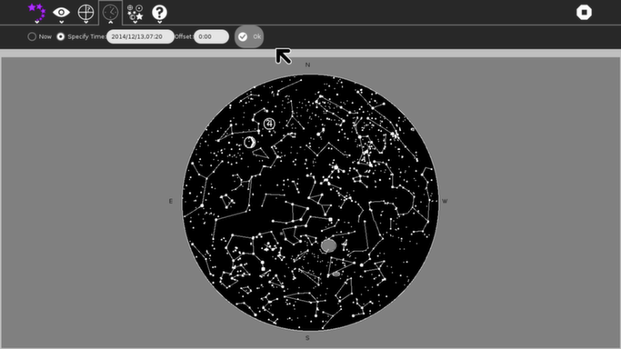
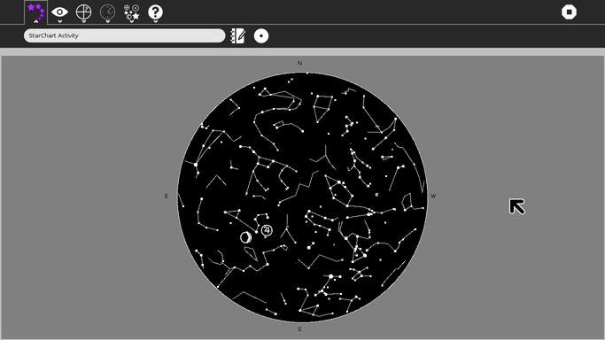

StarChart¶
About¶
This activity will display a map of the sky showing the position of the visible stars, some of the larger and brighter deep-sky objects (DSOs), the “classical” planets, the sun and the moon.
You may specify a location (longitude and latitude) and the time (including time zone offset from GMT) that you wish to have a plot for. Alternatively, you can get a plot which is updated once a minute showing the current sky.
You can also learn your way around the sky by using the “Locate” feature to find an object whose name you know or by using the “Identify” feature to get the name of something you see on the chart.
If you have access to a small telescope or a pair of binoculars, StarChart can provide a magnified view encompassing 7 degrees of the sky centered on a point you specify.
The latest version (StarChart 16) can be downloaded from here.
Introduction¶
StarChart was created by a professional programmer and amateur astronomer who likes to vacation in places far removed from his home town and appreciates the opportunity to view the sky from these places. The XO is a wonderful travel accessory for supporting this sort of thing since it is light, compact and frugal of battery power while providing a reasonably large, reasonably high resolution color display.
This Activity is intended to support the star-gazer who has no instrument better than his own eyes. It can be used as a guide to the sky overhead, as a tool for planning future observations (including observations from a different location) or as a way to reprise the look of the sky as it was at some time in the past.
Using Star Chart¶
Before you begin¶
Be sure your XO has been set to the correct time-zone offset and the correct local time! The astronomical algorithms need to compute GMT (UT) and can’t do that if “now” isn’t the right time. (This is only an issue if you don’t plan to always use “specify time”. But it’s still an untidy way to operate your computer.)
Installation and set-up¶
For best results, remove any previous version of StarChart you may have installed. Re-start X (hit Ctrl-Alt-Backspace). Then, simply follow the usual procedure for downloading and installing an Extra Activity.
Once you have installed StarChart, start it and select the clock button.

Is the time (YYYY/MM/DD,HH:MM) the correct year, month, day, hour and minute for your location (it’s 24-hour time – 1:00 PM is 13:00 in that system)? Is the zone offset showing the correct hours and minutes that your locale is offset from GMT? (Hint: Eastern Standard Time in the USA is “-5:00” with respect to GMT.) If not, stop the activity and correct your time and time-zone using the Sugar control panel before proceeding.
If the time and date are correct, the chart will be displaying the sky for a location in Massachusetts, USA as of right now. If you don’t happen to be in that location, you will need to enter your longitude and latitude. Click on “where” to display the controls for doing this. You should be able to get your coordinates from any good map, Google Earth or simply use the published coordinates for any relatively nearby city or town. Another possibility is from a site on the internet such as http://www.mapquest.com/atlas which provides a map with latitude and longitude information from which you can interpolate your specific coordinates.
Don’t be obsessive about the precision for this: the star chart will not look noticibly different if you are wrong by one or two degrees either way in latitude or longitude. Being off 100 km won’t make enough of a difference to show. But be sure you select East or West longitude and North or South latitude! Then click “Ok” so the program knows you really want to change these settings.
Now I’d recommend clicking the “Make Home” button. StarChart will save this location as your “home” position. From now on, whenever you start the activity the location will default to these coordinates.
How to read the plot¶
Stars are drawn (with default settings of the “What” menu tab controls) as white dots of different sizes. The brightest stars are drawn as the biggest dots; the dimmest stars are drawn as the smallest dots.
The constellations are drawn as white lines forming the stick-figures defined by the International Astronomical Union.
The sun, moon and “classical” planets are drawn as their astrological symbols and plotted much larger than they actually appear.
Deep sky objects are plotted as areas of gray, with different “decorations”, depending on the type of the object.
A diffuse nebula (such as the one in Orion) is plotted as a gray rectangle.
A galaxy is plotted as a gray ellipse or circle with a white border.
A planetary nebula is plotted as a gray circle with a central white dot.
An open cluster is plotted as a gray circle with no border.
A globular cluster is plotted as a gray circle with a white border and a central dot.
Although the ellipse representing a galaxy is roughly the correct eccentricity, the orientation of the ellipse on the chart is arbitrary and does not reflect the galaxy’s actual position angle.
To identify symbols, you can correlate them to the Astronomical Symbols on Wikipedia
Operating Instructions¶
The initial display for StarChart will show the sky for your locale and the current time. (This assumes you have done the steps described above in “Installation and set-up”.)

Reporting Bugs¶
To report a bug or to see what bugs have been reported and/or fixed, please go to the bug tracking page.